What Can Child Care Programs Do?
Let’s discuss what child care programs can do to keep children safe from responses to food allergies.


Administered by trained child care staff member
It is required that all child care providers have training on medication administration.
Ordered by physician
You must see evidence that all prescription medications have been ordered by a physician. Over the counter medication does not require physician's instructions. A parent can sign the medication form to have over the counter medication administered (such as Tylenol) without physician's order.
Prior written permission from parent
Prior written permission from the parent is required for each medication. We will address the form to be used for this permission later in this lesson. Topical non-prescription medications like sunscreen and diaper cream still require an annual written parent authorization.
Meds must be in original container
All meds, even topical must be in their original container. They are to be stored according to instructions and out of the reach of children.
Proper storage and disposal
Medications shall be returned to the parent or destroyed when they expire or when the parent or doctor states they are no longer needed.
Pharmacy label with all information intact
The pharmacy label must be intact on the bottle and it must include the physician's name, child's first and last name, administration instructions and the name and strength of the medicine.
Meds must be in original container
All meds, even topical must be in their original container. They are to be stored according to instructions and out of the reach of children.
Medication administration log
Always document after administering medications.